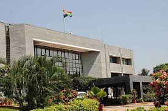
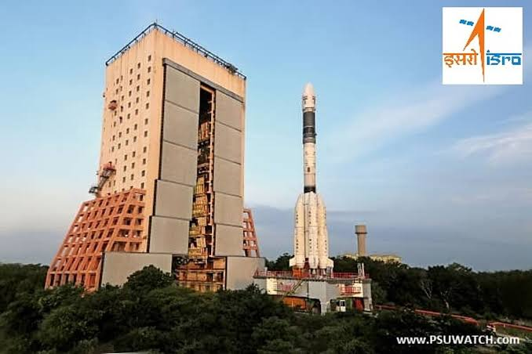

INDIAN SPACE AND RESEARCH ORGANIZATION
ISRO stands for Indian Space Research Organisation. It is the space agency of the Indian government headquartered
in Bengaluru, Karnataka, India.
ISRO was established on August 15, 1969, with a vision to develop space technology and its application to various
national tasks. Its mission is to harness space technology for national development, while pursuing space science
research and planetary exploration.

Isro Headquarter Banglore
India's first prime minister, Jawaharlal Nehru, started a group called the Indian National Committee for Space
Research (INCOSPAR) in 1962. A scientist named Vikram Sarabhai suggested the idea, because he thought it was
important to study space. INCOSPAR became bigger and changed its name to ISRO in 1969, while still being part of
the Department of Atomic Energy.
Over the years, ISRO has made significant achievements in the field of space technology. It has launched many
satellites for various applications such as communication, remote sensing, navigation, and weather forecasting.

Launch Station At Sriharikota
ISRO has also undertaken several interplanetary missions, including the Mars Orbiter Mission (MOM) and the
Chandrayaan-2 mission.
ISRO is also working on several future missions, including the Aditya-L1 mission to study the Sun, the Gaganyaan
mission to send Indian astronauts into space, and the Shukrayaan mission to study Venus.
Overall, ISRO is a critical player in the global space industry and has made significant contributions to the
development of space technology and its applications for the betterment of society.
 Logo of ISRO
Logo of ISRO
Applications
● Telecommunication:
ISRO has a group of communication satellites that have different communication transponders in C-band, Extended
C-band, ku-band, and S-band. These transponders help with various services such as television, radio networking,
and strategic communication.
● Military:
With 14 satellites, including GSAT-7A for exclusive military use and the rest as dual-use satellites, India has
the fourth largest number of satellites active in the sky which includes satellites for the exclusive use of its
air force (IAF) and navy. It improves the Air Force's ability to use network-centric warfare by connecting
various ground radar stations, airbases
● Academic:
Institutions like the Indira Gandhi National Open University and the Indian Institutes of Technology use
satellites for educational applications.Between 1975 and 1976, India conducted its largest sociological
programme using space technology, reaching 2,400 villages through video programming in local languages aimed at
educational development
● Telemedicine:
ISRO has applied its technology for telemedicine, directly connecting patients in rural areas to medical
professionals in urban locations via satellite. Since high-quality healthcare is not universally available in
some of the remote areas of India, patients in those areas are diagnosed and analysed by doctors in urban
centers in real time via video conferencing.
● Biodiversity Information System:
ISRO contributed to the development of India's Biodiversity Information System, which was finished in October
2002. The program used satellite remote sensing and geospatial modeling tools to map vegetation cover on a
1:250,000 scale after extensive field sampling and mapping.
● Cartography:
In order to create maps, the Indian IRS-P5 (CARTOSAT-1) was fitted with high-resolution panchromatic equipment
.Later, the more advanced IRS-P6 was developed for agricultural applications. The CARTOSAT-2 project, which
succeeded the CARTOSAT-1 project, had a single panchromatic camera that supported scene-specific on-spot images.